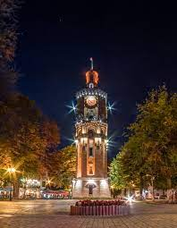
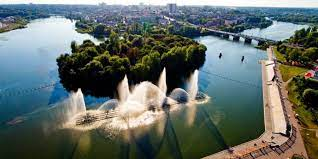

Місто Вінниця
місто на берегах Південного Бугу, адміністративний центр Вінницької області, Вінницького району, значний
історичний осередок східного Поділля, центр Вінницької агломерації.
Декілька фото міста




Вулиці міста
Вулиці Вінниці — не тільки дороги, що сполучають місто, це передусім історія міста, історія держав, суспільних
систем, режимів, що довелося йому пережити і що знайшло своє відображення в назвах вулиць.
Докладніше про списки вулиць та площ можна знайти вулиці Вінниці. Головна вулиця Вінниці — вулиця Соборна.
5 січня 2016 року були опубліковані нові назви 135 перейменованих вулиць, провулків, тупиків, проїздів у місті,
що були затверджені рішенням міської ради, керуючись Законом України від 9 квітня 2015 року № 317 «Про
засудження комуністичного та націонал-соціалістичного (нацистського) тоталітарних режимів в Україні та заборону
пропаганди їх символіки»[5].
- Вишенька
- Замостя
- Старе місто
Племінники князя Ольгерда — Юрій, Олександр, Федір і Костянтин Коріятовичі, почали будувати в подільських
містах фортеці вже як державні резиденції, а ще засновувати нові міста-фортеці. В історіографії XIX—XX ст.
вважалося, що серед них могла бути й Вінниця, однак, нові археологічні та документальні відомості це
спростовують.
У документах 1363 року Вінниця не згадується: дата за принципом «не пізніше» — так само ймовірна гіпотеза щодо
битви напередодні (1362 р.), як і заснування отаманської Вінниці на згарищі руського града — не пізніше 1355 р.
(відносно походу 1354 р.). Умовне започаткування літопису Вінниці з 1363 року пов'язане з намаганням Великого
Литовського князівства утвердити своє володарювання на Поділлі, укріпити обороноздатність регіону. Міста
існували напередодні: давньоруська «археологічна» Вінниця у межах староміської території — за 150 років
напередодні литовської експансії, безперервна Вінниця під управлінням отамана — близько десятиліття перед
загарбанням Поділля Литвою. У сенсі обрання критерієм для організації міста наявності його адміністративної й
самоврядної функцій дата «не пізніше 1355 р.» є вірогідною.
Цікавими постають непрямі свідчення першоджерел про долитовську князівську протекцію над вінницькою
територіальною громадою, що являла «насамперед земельну громаду» (В.Отамановський). Серед писемних документів
XIV ст. для Вінниці найцікавішими є: Список міст руських, складений близько середини, відредагований наприкінці
століття, який зафіксував територіальні здобутки Русі, у тому числі XI—XIII ст.; грамота Гринькові Сокілецькому
від Федора Коріятовича 1391 р., у якій згадується «княгиня Вінницька» (що саме по собі наводить на думку про
долитовську феодальну належність Вінниці; грамота виявлена у Національному архіві Республіки Білорусь у 2001
р.); повідомлення «Повісті про Поділля» з русько-литовських літописів про посадження князем Вітовтом старост у
Брацлаві, Сокільці та Вінниці (події 1393 року).
1545 року у Вінниці налічувалось 273 будинки, через сім років — 429. Перший замок було споруджено на високому
місці лівого берега. За першим описом Вінниці в люстрації Київської землі 1471 р., а також за описами
(польськими «люстраціями») вінницького замку XVI ст., що відповідають археологічним даним, відомо, що
укріплених лівобережних осередків було два: на пагорбі у межиріччі Богу-Вєніци (Південного Бугу — Віннички) та
на скелі у межиріччі Богу й потічка (Замкова гора). Староміська скеля була місцем давньоруського града і «замку
Вєніца над рікою Богом» від часів К.Острозького (протягом 1512—1580 рр.) У 1565 році місто стає повітовим
центром Брацлавського воєводства. У 1558 році з метою підсилення захисту від ворогів була запланована нова
фортеця на острові Кемпа, зі спорудженням якої 1604 року дістало захист «Нове місто», що виникло на рубежі
XVI—XVII століть на правому березі Південного Бугу (ймовірно, напередодні перенесення воєводських установ до
Вінниці 1598 р.); продовжувало розвиватись «Старе місто» на лівому березі.
Першою писемною назвою міста є Вѣничя (за «Списком міст руських») або Вѣница (за літописами
русько-литовськими). За найімовірнішу основу назви вбачають давньоруське вѣно — «плата за наречену», «посаг за
нею»[10]. Появу такої назви пояснюють тим, що литовський князь Ольгерд визволив Вінницю й землі навкруги в XIV
ст. від татар і подарував їх племінникам. Однак «віно» — тільки юридичний термін із шлюбного права, уживаний
тільки щодо жінок; крім того, племінники залишалися васалами великого князя й увійшли в землю Подільську з його
«презволѣнія», а не через дарування.
Іншим варіантом походження назви називають річку Вінничку, малу притоку Бога (Південного Буга). Десь при місці
впадіння притоки розпочалося стале освоєння території Вінниці (за археологією, з першої чверті XIII ст.).
Критики цієї версії кажуть, що річка така мілка, що ймовірніше сама позичила назву в міста.
В уривку «Західноруського, або Білоруського літопису» «О Подолской земли» вказано варіант назви «Бениця».[11]
Назва міста мала багато всяких відмін транслітерації. Але 27 січня 2010 року постановою кабінету міністрів № 55
був визначений єдиний варіант написання латинкою Vinnytsia.
За Люблінською унією 1569 року Вінниця входила до складу Польщі і з 1598 року була центром Брацлавського
воєводства. Про її відчутну роль у господарському житті краю засвідчують надані у 1580, 1593 і у 1634 роках
привілеї безмитної торгівлі на всій території польсько-литовської держави і утвердження Магдебурзького права у
1640 році.
Католики у 1617 та 1624 роках завершили будівництво двох монастирів, у 1642 відкрили єзуїтський колегіум. Серед
православних віруючих наростала популярність вінницького братства Кузьми й Дем'яна, яке з останньої чверті XVI
століття утримувало українську братську школу. У 1616 році засновано православний чоловічий монастир на честь
Вознесіння Господнього, а у 1632 православний жіночий Благовіщенський монастир. Завдяки зусиллям відомого діяча
культури Петра Могили та брацлавського підсудка Михайла Кропивницького у 1632 році відкрито православний
колегіум.
7 липня 1648 року до Вінниці вступають частини військ Богдана Хмельницького на чолі з полковником Максимом
Кривоносом і вона стає сотенним містом Кальницького полку. Героїчну сторінку в історію боротьби українського
народу за незалежність вписали вінничани у березні 1651 року, коли у ході оборони міста 3-тисячним козацьким
полком під проводом полковника Івана Богуна було вщент розгромлено 20-тисячне польське військо. У 1643 і 1653
рр. Вінницю відвідав Богдан Хмельницький, котрий після цієї перемоги сказав: «Тебе славний полковнику, не
забуде народ ніколи». Протягом 1653–1667 рр. Вінниця була полковим містом гетьманської держави.
Після Андрусівського перемир'я 1667 року Брацлавщина, як і вся Правобережна Україна, залишилася під владою
польської корони. Однак шляхетська Польща настільки ослабла, що не змогла встояти перед натиском Високої Порти
і, за Бучацьким миром 1672 року, віддала османам значну частину Подільського, Брацлавського і Київського
воєводств. 27 років, до 1699-го, ці землі перебували під владою створеного османами Сарматського князівства.
Трактат «Про вічний мир» 1686-го повернув Вінницю Польщі. Протягом 1750-х років місто було охоплене
гайдамацьким рухом.
У 1711 р. Вінницю без бою було зайнято армією гетьмана Пилипа Орлика, під час його походу на Правобережжя проти
російської влади.